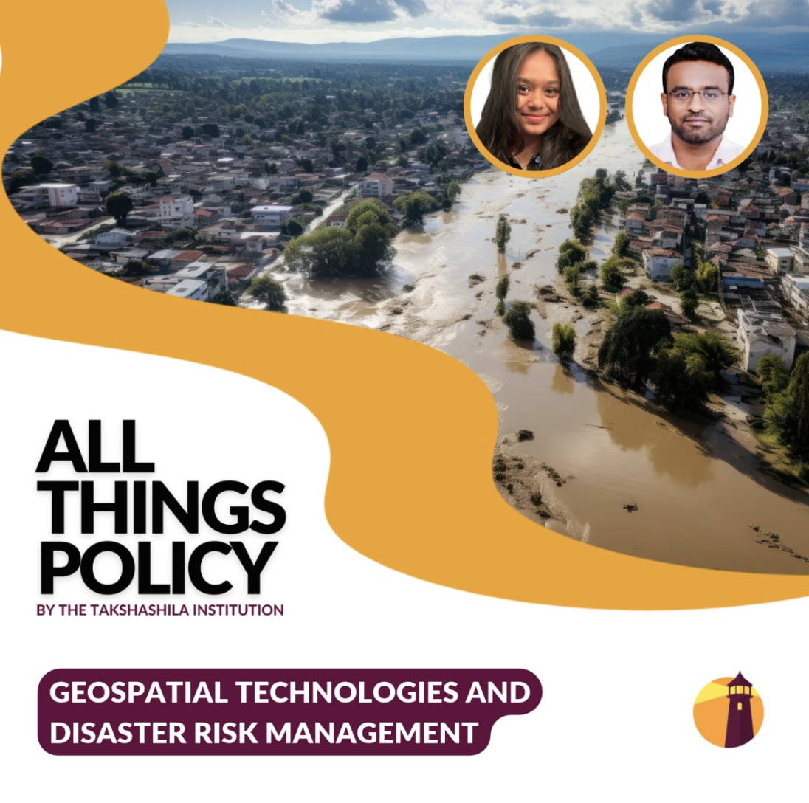

ALL THINGS POLICY · EPISODE 01
Geospatial Technologies and Disaster Risk Management
What does it take to turn a warning about a mountain slope or a rising river into timely action? Host Maanya Bhardwaj sits with Prof. Y. Nithiyanandam to examine how geospatial technologies help us map natural hazards, reduce exposure, monitor changing conditions and manage a disaster when it unfolds.
They discuss the contribution of satellite data, ground measurements, geospatial technology and AI, and the costs of making these capabilities dependable. Using Himalayan examples, the conversation explores how scientists investigate causes, how governments should prioritise investment, and why upstream information matters to people downstream.